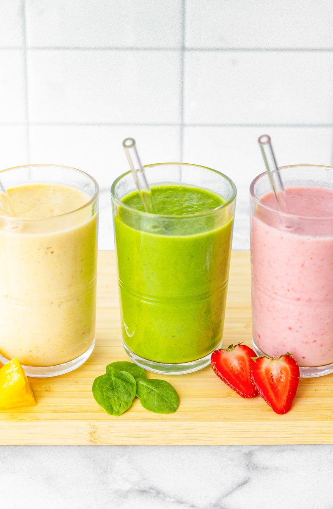

Making a fruit smoothie is as simple as tossing ingredients in a blender and letting it rip, but we want to make sure you succeed every time, so here’s our exact process:
1.Add liquid to your blender. I typically use unsweetened almond milk, but you could use any other kind of milk, fruit juice, or even just water.
2.Add in any fibrous foods. If you are adding in spinach or other greens, this is the time to toss them in.
3.Add in your frozen fruits and vegetables. I like to keep at least frozen bananas and frozen strawberries on hand for smoothie making. Any frozen fruit works!
4.Add any fresh fruits or veggies you’d like to use. Here is where you’ll toss in fresh strawberries or an avocado half.
5.Top it off with your favorite nutrition mix-ins. Add protein powder, collagen, chia seeds, turmeric—whatever you’d like to boost the nutrition of the smoothie.
6.Blend away! I like to start my blender on low and then slowly ramp up to full speed.
This makes sure everything is mixed well and the blades don’t get stuck. I blend until the smoothie looks silky, and then I pour and enjoy.